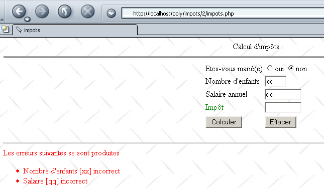
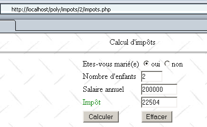

4. Voorbeelden
4.1. Belastingapplicatie: Inleiding
We introduceren hier de applicatie IMPOTS, die hierna nog vaak zal worden gebruikt. Het gaat om een applicatie waarmee de belasting van een belastingplichtige kan worden berekend. We gaan uit van het vereenvoudigde geval van een belastingplichtige die alleen zijn salaris hoeft aan te geven:
- we berekenen het aantal aandelen van de werknemer nbParts=nbEnfants/2 +1 als hij ongehuwd is, nbEnfants/2+2 als hij getrouwd is, waarbij nbEnfants het aantal kinderen is.
- als hij ten minste drie kinderen heeft, krijgt hij een half extra aandeel
- zijn belastbaar inkomen wordt berekend als R = 0,72 * S, waarbij S zijn jaarsalaris is
- we berekenen zijn gezinscoëfficiënt QF = R / nbParts
- zijn belasting I wordt berekend. Laten we de volgende tabel bekijken:
12620,0 | 0 | 0 |
13190 | 0,05 | 631 |
15640 | 0,1 | 1290,5 |
24.740 | 0,15 | 2072,5 |
31810 | 0,2 | 3309,5 |
39.970 | 0,25 | 4900 |
48360 | 0,3 | 6898,5 |
55790 | 0,35 | 9316,5 |
92970 | 0,4 | 12106 |
127860 | 0,45 | 16754,5 |
151250 | 0,50 | 23147,5 |
172.040 | 0,55 | 30710 |
195.000 | 0,60 | 39312 |
0 | 0,65 | 49062 |
Elke regel heeft 3 velden. Om belasting I te berekenen, zoeken we de eerste regel waar QF <= veld1. Als bijvoorbeeld QF = 23000 is, vinden we de regel
Belasting I is dan gelijk aan 0,15*R - 2072,5*nbParts. Als QF zodanig is dat de relatie QF<=veld1 nooit geldt, dan worden de coëfficiënten van de laatste regel gebruikt. In dit geval:
wat de belasting I = 0,65*R - 49062*nbParts oplevert.
De gegevens waarmee de verschillende belastingschijven worden gedefinieerd, bevinden zich in een ODBC-MySQL-database. MySQL is een SGBD uit het publieke domein die op verschillende platforms, waaronder Windows en Linux, kan worden gebruikt. Met dit SGBD is een database dbimpots aangemaakt met daarin één enkele tabel genaamd impots. De toegang tot de database wordt beheerd via een gebruikersnaam en wachtwoord, in dit geval admimpots/mdpimpots. De volgende schermafbeelding laat zien hoe de database dbimpots met MySQL kan worden gebruikt:
C:\Program Files\EasyPHP\mysql\bin>mysql -u admimpots -p
Enter password: *********
Welcome to the MySQL monitor. Commands end with ; or \g.
Your MySQL connection id is 18 to server version: 3.23.49-max-nt
Type 'help;' or '\h' for help. Type '\c' to clear the buffer.
mysql> use dbimpots;
Database changed
mysql> show tables;
+--------------------+
| Tables_in_dbimpots |
+--------------------+
| impots |
+--------------------+
1 row in set (0.00 sec)
mysql> describe impots;
+---------+--------+------+-----+---------+-------+
| Field | Type | Null | Key | Default | Extra |
+---------+--------+------+-----+---------+-------+
| limites | double | YES | | NULL | |
| coeffR | double | YES | | NULL | |
| coeffN | double | YES | | NULL | |
+---------+--------+------+-----+---------+-------+
3 rows in set (0.02 sec)
mysql> select * from impots;
+---------+--------+---------+
| limites | coeffR | coeffN |
+---------+--------+---------+
| 12620 | 0 | 0 |
| 13190 | 0.05 | 631 |
| 15640 | 0.1 | 1290.5 |
| 24740 | 0.15 | 2072.5 |
| 31810 | 0.2 | 3309.5 |
| 39970 | 0.25 | 4900 |
| 48360 | 0.3 | 6898 |
| 55790 | 0.35 | 9316.5 |
| 92970 | 0.4 | 12106 |
| 127860 | 0.45 | 16754 |
| 151250 | 0.5 | 23147.5 |
| 172040 | 0.55 | 30710 |
| 195000 | 0.6 | 39312 |
| 0 | 0.65 | 49062 |
+---------+--------+---------+
14 rows in set (0.00 sec)
mysql>quit
De database dbimpots wordt als volgt omgezet naar de gegevensbron ODBC:
- de 32-bits gegevensbronbeheerder ODBC wordt gestart

- gebruik de knop [Add] om een nieuwe gegevensbron ODBC toe te voegen

- we selecteren de driver MySQL en voeren [Terminer] uit
 |
- Het stuurprogramma MySQL vraagt om een aantal gegevens:
1 | de naam DSN die aan de gegevensbron ODBC moet worden gegeven – kan willekeurig zijn |
2 | de machine waarop SGBD MySQL draait – in dit geval localhost. Het is interessant om op te merken dat de database een externe database zou kunnen zijn. Lokale applicaties die de gegevensbron ODBC gebruiken, zouden hier niets van merken. Dit zou met name het geval zijn voor onze applicatie PHP. |
3 | de te gebruiken database MySQL. MySQL is een SGBD die relationele databases beheert; dit zijn verzamelingen van tabellen die via relaties met elkaar zijn verbonden. Hier wordt de naam van de beheerde database opgegeven. |
4 | de naam van een gebruiker die toegangsrechten heeft tot deze database |
5 | zijn wachtwoord |
4.2. Belastingapplicatie: de klasse ImpotsDSN
Onze applicatie zal gebruikmaken van de klasse PHP ImpotsDSN, die de volgende attributen, constructor en methode zal hebben:
<?php
...
// attributen
var $limites; // limietentabel
var $coeffR; // tabel met coeffR
var $coeffN; // tabel met coeffN
var $erreurs; // foutenlijst
- We hebben in de probleemstelling gezien dat we drie datasets nodig hadden
12620,0 | 0 | 0 |
13190 | 0,05 | 631 |
15640 | 0,1 | 1290,5 |
24.740 | 0,15 | 2072,5 |
31810 | 0,2 | 3309,5 |
39.970 | 0,25 | 4900 |
48360 | 0,3 | 6898,5 |
55790 | 0,35 | 9316,5 |
92970 | 0,4 | 12106 |
127860 | 0,45 | 16754,5 |
151250 | 0,50 | 23147,5 |
172.040 | 0,55 | 30710 |
195.000 | 0,60 | 39312 |
0 | 0,65 | 49062 |
De eerste kolom wordt geplaatst in het attribuut $limites van de klasse ImotsDSN, de tweede in het attribuut $coeffR en de derde in $coeffN. Deze drie attributen worden geïnitialiseerd door de constructor van de klasse. Deze haalt de gegevens op uit een gegevensbron ODBC. Tijdens het aanmaken van het object kunnen diverse fouten optreden. Deze fouten worden gerapporteerd in het attribuut $erreurs in de vorm van een array met foutmeldingen.
- De constructor ontvangt als parameter een woordenboek $impots met de volgende velden:
// dsn: naam DSN van de gegevensbron ODBC die de waarden van de grenswaardenlijsten bevat, coeffR, coeffN
// user: naam van een gebruiker met leesrechten voor de gegevensbron ODBC
// pwd: zijn wachtwoord
// table: naam van de tabel die de waarden bevat (limieten, coeffR, coeffN)
// limieten: naam van de kolom met de grenswaarden
// coeffR: naam van de kolom die de waarden coeffR bevat
// coeffN: naam van de kolom met de waarden coeffN
De constructorparameter bevat alle benodigde informatie om de gegevens uit de gegevensbron ODBC te lezen
- Zodra het object ImpotsDSN is aangemaakt, kunnen gebruikers van de klasse de methode calculerImpots van het object aanroepen. Deze methode ontvangt als parameter een woordenboek $personne:
// $persoon["marié"]: ja, nee
// $persoon["enfants"]: aantal kinderen
// $persoon["salaire"]: jaarsalaris
De volledige klasse ziet er als volgt uit:
<?php
// definitie van een klasse objImpots
class ImpotsDSN{
// attributen: de 3 gegevenstabellen
var $limites; // tabel met limieten
var $coeffR; // tabel met coeffR
var $coeffN; // tabel met coeffN
var $erreurs; // foutenlijst
// fabrikant
function ImpotsDSN($impots){
// $impots: woordenboek met de volgende velden
// dsn: naam DSN van de gegevensbron ODBC die de waarden van de grenswaarden tabellen bevat, coeffR, coeffN
// user: naam van een gebruiker met leesrechten voor de gegevensbron ODBC
// pwd: zijn wachtwoord
// table: naam van de tabel die de waarden bevat (limieten, coeffR, coeffN)
// limieten: naam van de kolom die de grenswaarden bevat
// coeffR: naam van de kolom die de waarden coeffR bevat
// coeffN: naam van de kolom met de waarden coeffN
// in eerste instantie geen fouten
$this->erreurs=array();
// controle van de aanroep
if (! isset($impots[dsn]) || ! isset($impots[user]) ||! isset($impots[pwd]) ||! isset($impots[table]) ||
! isset($impots[limites]) ||! isset($impots[coeffR]) ||! isset($impots[coeffN])){
// fout
$this->erreurs[]="Appel incorrect";
// einde
return;
}//if
// database openen DSN
$connexion=odbc_connect($impots[dsn],$impots[user],$impots[pwd]);
// fout?
if(! $connexion){
// fout
$this->erreurs[]="Impossible d'ouvrir la base DSN [$impots[dsn]] (".odbc_error().")";
// einde
return;
}//if
// verzoek naar de database verzenden
$requête=odbc_prepare($connexion,"select $impots[limites],$impots[coeffR],$impots[coeffN] from $impots[table]");
if(! odbc_execute($requête)){
// fout
$this->erreurs[]="Impossible d'expoiter la base DSN [$impots[dsn]] (".odbc_error().")";
// einde
odbc_close($connexion);
return;
}//if
// verwerking van de zoekresultaten
$this->limites=array();
$this->coeffR=array();
$this->coeffN=array();
while(odbc_fetch_row($requête)){
// nog een regel
$this->limites[]=odbc_result($requête,$impots[limites]);
$this->coeffR[]=odbc_result($requête,$impots[coeffR]);
$this->coeffN[]=odbc_result($requête,$impots[coeffN]);
}//while
// database sluiten
odbc_close($connexion);
}//constructor
// --------------------------------------------------------------------------
function calculer($personne){
// $persoon["marié"]: ja, nee
// $persoon["enfants"]: aantal kinderen
// $persoon["salaire"] : jaarsalaris
// is het object in goede staat?
if (! is_array($this->erreurs) || count($this->erreurs)!=0) return -1;
// controle van de aanroep
if (! isset($personne[marié]) || ! isset($personne[enfants]) ||! isset($personne[salaire])){
// fout
$this->erreurs[]="Appel incorrect";
// einde
return -1;
}//if
// Zijn de parameters correct?
$personne[marié]=strtolower($personne[marié]);
if($personne[marié]!=oui && $personne[marié]!=non){
// fout
$this->erreurs[]="Statut marital [$personne[marié]] incorrect";
}//if
if(! preg_match("/^\s*\d{1,3}\s*$/",$personne[enfants])){
// fout
$this->erreurs[]="Nombre d'enfants [$personne[enfants]] incorrect";
}//if
if(! preg_match("/^\s*\d+\s*$/",$personne[salaire])){
// fout
$this->erreurs[]="salaire [$personne[salaire]] incorrect";
}//if
// fouten?
if(count($this->erreurs)!=0) return -1;
// aantal porties
if($personne[marié]==oui) $nbParts=$personne[enfants]/2+2;
else $nbParts=$personne[enfants]/2+1;
// een half aandeel extra als er ten minste 3 kinderen zijn
if($personne[enfants]>=3) $nbParts+=0.5;
// belastbaar inkomen
$revenuImposable=0.72*$personne[salaire];
// gezinsquotiënt
$quotient=$revenuImposable/$nbParts;
// wordt aan het einde van de tabel met limieten geplaatst om de daaropvolgende lus te beëindigen
$this->limites[$this->nbLimites]=$quotient;
// belastingberekening
$i=0;
while($quotient>$this->limites[$i]) $i++;
// omdat $quotient aan het einde van de tabel $limites is geplaatst, de voorgaande lus
// mag niet buiten de tabel $limites vallen
// nu kunnen we de belasting berekenen
return floor($revenuImposable*$this->coeffR[$i]-$nbParts*$this->coeffN[$i]);
}//calculImpots
}//belastingklasse
?>
Een testprogramma zou er als volgt uit kunnen zien:
<?php
// bibliotheken
include "ImpotsDSN.php";
// een belastingobject aanmaken
$conf=array(dsn=>"mysql-dbimpots",user=>admimpots,pwd=>mdpimpots,
table=>impots,limites=>limites,coeffR=>coeffR,coeffN=>coeffN);
$objImpots=new ImpotsDSN($conf);
// fouten?
if(count($objImpots->erreurs)!=0){
// bericht
echo "Les erreurs suivantes se sont produites :\n";
$erreurs=$objImpots->erreurs;
for($i=0;$i<count($erreurs);$i++){
echo "$erreurs[$i]\n";
}//for
// einde
exit(1);
}//if
// proeven
calculerImpots($objImpots,oui,2,200000);
calculerImpots($objImpots,non,2,200000);
calculerImpots($objImpots,oui,3,200000);
calculerImpots($objImpots,non,3,200000);
calculerImpots($objImpots,array(),array(),array());
// einde
exit(0);
// -----------------------------------------------------------
function calculerImpots($objImpots,$marié,$enfants,$salaire){
// echo
echo "impots($marié,$enfants,$salaire)\n";
// belastingberekening
$personne=array(marié=>$marié,enfants=>$enfants,salaire=>$salaire);
$montant=$objImpots->calculer($personne);
// fouten?
if(count($objImpots->erreurs)!=0){
// bericht
echo "Les erreurs suivantes se sont produites :\n";
$erreurs=$objImpots->erreurs;
for($i=0;$i<count($erreurs);$i++){
echo "$erreurs[$i]\n";
}//for
}else echo "montant=$montant\n";
}//calculerImp
- het testprogramma zorgt ervoor dat het bestand met de klasse ImpotsDSN wordt 'opgenomen'
- en maakt vervolgens een object objImpots aan van de klasse ImpotsDSN, waarbij het de benodigde informatie doorgeeft aan de constructor van het object
- Zodra dit object is aangemaakt, wordt de methode calculer ervan vijf keer aangeroepen
De verkregen resultaten zijn als volgt:
dos>e:\php43\php.exe test.php
impots(oui,2,200000)
montant=22504
impots(non,2,200000)
montant=33388
impots(oui,3,200000)
montant=16400
impots(non,3,200000)
montant=22504
impots(Array,Array,Array)
Les erreurs suivantes se sont produites :
Statut marital [array] incorrect
Nombre d'enfants [Array] incorrect
salaire [Array] incorrect
We zullen voortaan de klasse ImpotsDSN gebruiken zonder de definitie ervan opnieuw te geven.
4.3. Belastingapplicatie: versie 1
We presenteren nu versie 1 van de applicatie IMPOTS. We gaan uit van een webapplicatie die een interface HTML aan een gebruiker zou tonen om de drie parameters te verkrijgen die nodig zijn voor de berekening van de belasting:
- de burgerlijke staat (gehuwd of ongehuwd)
- het aantal kinderen
- het jaarsalaris

Het formulier wordt weergegeven via de volgende pagina PHP:
<?php //belastingformulier ?>
<html>
<head>
<title>impots</title>
<script language="JavaScript" type="text/javascript">
function effacer(){
// formulier wissen
with(document.frmImpots){
optMarie[0].checked=false;
optMarie[1].checked=true;
txtEnfants.value="";
txtSalaire.value="";
txtImpots.value="";
}//met
}//wissen
</script>
</head>
<body background="/poly/impots/images/standard.jpg">
<center>
Calcul d'impôts
<hr>
<form name="frmImpots" method="POST">
<table>
<tr>
<td>Etes-vous marié(e)</td>
<td>
<input type="radio" name="optMarie" value="oui" <?php echo $requête->chkoui ?>>oui
<input type="radio" name="optMarie" value="non" <?php echo $requête->chknon ?>>non
</td>
</tr>
<tr>
<td>Nombre d'enfants</td>
<td><input type="text" size="5" name="txtEnfants" value="<?php echo $requête->enfants ?>"></td>
</tr>
<tr>
<td>Salaire annuel</td>
<td><input type="text" size="10" name="txtSalaire" value="<?php echo $requête->salaire ?>"></td>
</tr>
<tr>
<td><font color="green">Impôt</font></td>
<td><input type="text" size="10" name="txtImpots" value="<?php echo $requête->impots ?>" readonly></td>
</tr>
<tr></tr>
<tr>
<td><input type="submit" value="Calculer"></td>
<td><input type="button" value="Effacer" onclick="effacer()"></td>
</tr>
</table>
</form>
</center>
<?php
// zijn er fouten?
if(count($requête->erreurs)!=0){
// fouten weergeven
echo "<hr>\n<font color=\"red\">\n";
echo "Les erreurs suivantes se sont produites<br>";
echo "<ul>";
for($i=0;$i<count($requête->erreurs);$i++){
echo "<li>".$requête->erreurs[$i]."</li>\n";
}
echo "</ul>\n</font>\n";
}//if
?>
</body>
</html>
De pagina PHP geeft alleen informatie weer die door het hoofdprogramma van de applicatie wordt doorgegeven in de variabele $requête, een object met de volgende velden:
attributen van de keuzerondjes ‘ja’ en ‘nee’ – hebben als mogelijke waarden "checked" of "" om het bijbehorende keuzerondje al dan niet te activeren | |
het aantal kinderen van de belastingplichtige | |
zijn jaarsalaris | |
het bedrag aan te betalen belasting | |
een eventuele lijst met fouten – kan leeg zijn. |
De pagina die naar de klant wordt verzonden, bevat een JavaScript-script met een functie effacer die is gekoppeld aan de knop "Effacer". Deze functie zorgt ervoor dat het formulier weer in de oorspronkelijke staat wordt teruggezet: de knop is niet aangevinkt en de invoervelden zijn leeg. Opgemerkt moet worden dat dit resultaat niet bereikt kon worden met een knop HTML van het type "reset". Wanneer dit type knop wordt gebruikt, zet de browser het formulier namelijk terug in de toestand waarin het is ontvangen. In onze toepassing ontvangt de browser echter formulieren die mogelijk niet leeg zijn.
De toepassing die het voorgaande formulier verwerkt, is de volgende:
<?php
// verwerkt het belastingformulier
// bibliotheken
include "ImpotsDSN.php";
// configuratie van de applicatie
ini_set("register_globals","off");
ini_set("display_errors","off");
$formulaireImpots="impots_form.php";
$erreursImpots="impots_erreurs.php";
$bdImpots=array(dsn=>"mysql-dbimpots",user=>admimpots,pwd=>mdpimpots,
table=>impots,limites=>limites,coeffR=>coeffR,coeffN=>coeffN);
// de parameters worden opgehaald
$requête->marié=$_POST["optMarie"];
$requête->enfants=$_POST["txtEnfants"];
$requête->salaire=$_POST["txtSalaire"];
// hebben we alle parameters?
if(! isset($requête->marié) || ! isset($requête->enfants) || ! isset($requête->salaire)){
// leeg formulier voorbereiden
$requête->chkoui="";
$requête->chknon="checked";
$requête->enfants="";
$requête->salaire="";
$requête->impots="";
$requête->erreurs=array();
// formulier weergeven
include $formulaireImpots;
// einde
exit(0);
}//if
// parameters controleren
$requête=vérifier($requête);
// fouten?
if(count($requête->erreurs)!=0){
// formulier weergeven
include "$formulaireImpots";
// einde
exit(0);
}//if
// berekening van het antwoord
$requête=calculerImpots($bdImpots,$requête);
// fouten?
if(count($requête->erreurs)!=0){
// foutformulier weergeven
include "$erreursImpots";
// einde
exit(0);
}//if
// formulier weergeven
include "$formulaireImpots";
// einde
exit(0);
// --------------------------------------------------------
function vérifier($requête){
// controleert de geldigheid van de parameters van de aanvraag
// in eerste instantie geen fouten
$requête->erreurs=array();
// geldige status?
$requête->marié=strtolower($requête->marié);
if($requête->marié!="oui" && $requête->marié!="non"){
// een fout
$requête->erreurs[]="Statut marital [$requête->marié] incorrect";
}
// geldig aantal kinderen?
if(! preg_match("/^\s*\d+\s*$/",$requête->enfants)){
// een fout
$requête->erreurs[]="Nombre d'enfants [$requête->enfants] incorrect";
}
// geldig salaris?
if(! preg_match("/^\s*\d+\s*$/",$requête->salaire)){
// een fout
$requête->erreurs[]="Salaire [$requête->salaire] incorrect";
}
// status van de keuzerondjes
if($requête->marié=="oui"){
$requête->chkoui="checked";
$requête->chknon="";
}else{
$requête->chknon="checked";
$requête->chkoui="";
}
// de aanvraag wordt verzonden
return $requête;
}//controleren
// --------------------------------------------------------
function calculerImpots($bdImpots,$requête){
// het belastingbedrag berekenen
// $bdImpots: woordenboek met de benodigde informatie om de gegevensbron ODBC te lezen
// $requête: de aanvraag met de gegevens over de belastingplichtige
// er wordt een object ImpotsDSN aangemaakt
$objImpots=new ImpotsDSN($bdImpots);
// fouten?
if(count($objImpots->erreurs)!=0){
// de fouten worden in de aanvraag opgenomen
$requête->erreurs=$objImpots->erreurs;
// klaar
return $requête;
}//if
// belasting berekenen
$personne=array(marié=>"$requête->marié",enfants=>"$requête->enfants",salaire=>"$requête->salaire");
$requête->impots=$objImpots->calculer($personne);
// het resultaat wordt weergegeven
return $requête;
}//calculerImpots
Opmerkingen:
- Allereerst wordt de klasse ImpotsDSN opgenomen. Deze vormt de basis voor de belastingberekening en verbergt de toegang tot de database voor ons
- Er worden een aantal instellingen uitgevoerd om het onderhoud van de applicatie te vergemakkelijken. Als parameters veranderen, passen we hun waarden in deze sectie aan. Over het algemeen worden deze configuratiewaarden eerder in een bestand of een database opgeslagen.
- We halen de drie parameters uit het formulier die overeenkomen met de velden HTML, optMarie, txtEnfants en txtSalaire.
- Deze parameters kunnen geheel of gedeeltelijk ontbreken. Dit is met name het geval bij de eerste aanvraag van het formulier. In dat geval wordt er gewoon een leeg formulier verzonden.
- Vervolgens wordt de geldigheid van de drie opgehaalde parameters gecontroleerd. Als deze onjuist blijken te zijn, wordt het formulier teruggestuurd zoals het is ingevuld, maar dan met een lijst met fouten.
- Zodra de geldigheid van de drie parameters is gecontroleerd, kan de belasting worden berekend. Deze wordt berekend door de functie calculerImpots. Deze functie maakt een object van het type ImpotsDSN aan en gebruikt de methode calculer van dit object.
- Het aanmaken van het object ImpotsDSN kan mislukken als de database niet beschikbaar is. In dat geval geeft de applicatie een specifieke foutpagina weer met de fouten die zijn opgetreden.
- Als alles goed is verlopen, wordt het formulier teruggestuurd zoals het is ingevuld, maar dan met het te betalen belastingbedrag erbij.
De foutpagina ziet er als volgt uit:
<?php // foutpagina ?>
<html>
<head>
<title>Application impôts indisponible</title>
</head>
<body background="/poly/impots/images/standard.jpg">
<h3>Calcul d'impôts</h3>
<hr>
Application indisponible. Recommencez ultérieurement.<br><br>
<font color="red">
Les erreurs suivantes se sont produites<br>
<ul>
<?php
// fouten weergeven
for($i=0;$i<count($requête->erreurs);$i++){
echo "<li>".$requête->erreurs[$i]."</li>\n";
}
?>
</ul>
</font>
</body>
</html>
Hier volgen enkele voorbeelden van fouten. Allereerst wordt er een onjuist wachtwoord ingevoerd:

Er worden onjuiste gegevens in het formulier ingevuld:

Ten slotte worden de juiste waarden ingevoerd:

4.4. Belastingapplicatie: versie 2
In het vorige voorbeeld worden de parameters txtEnfants en txtSalaire van het formulier door de server op geldigheid gecontroleerd. Hier stellen we voor om dit te controleren met een JavaScript-script dat in de formulierpagina is opgenomen. De browser voert dan de controle van de parameters uit. De server wordt alleen benaderd als deze parameters geldig zijn. Zo besparen we "bandbreedte". De weergavepagina impots-form.php ziet er dan als volgt uit:
<?php //belastingformulier ?>
<html>
<head>
<title>impots</title>
<script language="JavaScript" type="text/javascript">
function effacer(){
........
}//wissen
//------------------------------
function calculer(){
// controle van de instellingen voordat ze naar de server worden verzonden
with(document.frmImpots){
//aantal kinderen
champs=/^\s*(\d+)\s*$/.exec(txtEnfants.value);
if(champs==null){
// het formulier is niet gecontroleerd
alert("Le nombre d'enfants n'a pas été donné ou est incorrect");
nbEnfants.focus();
return;
}//if
//salaris
champs=/^\s*(\d+)\s*$/.exec(txtSalaire.value);
if(champs==null){
// het model is niet gecontroleerd
alert("Le salaire n'a pas été donné ou est incorrect");
salaire.focus();
return;
}//als
// alles in orde – het formulier wordt naar de server verzonden
submit();
}//met
}//berekenen
</script>
</head>
<body background="/poly/impots/images/standard.jpg">
............
<td><input type="button" value="Calculer" onclick="calculer()"></td>
<td><input type="button" value="Effacer" onclick="effacer()"></td>
........
</body>
</html>
Let op de volgende wijzigingen:
- de knop Calculer is niet langer van het type submit, maar van het type button, gekoppeld aan een functie met de naam calculer. Deze functie voert de analyse uit van de velden txtEnfants en txTsalaire. Als deze correct zijn, worden de waarden van het formulier naar de server verzonden (submit); anders wordt er een foutmelding weergegeven.
Hieronder volgt een voorbeeld van de weergave in geval van een fout:

4.5. Belastingapplicatie: versie 3
We passen de applicatie enigszins aan om het concept van een sessie te introduceren. We beschouwen de applicatie nu als een simulatieprogramma voor belastingberekening. Een gebruiker kan dan verschillende „configuraties” van belastingplichtigen simuleren en zien hoeveel belasting er voor elk van deze configuraties zou moeten worden betaald. De onderstaande webpagina geeft een voorbeeld van wat er zou kunnen worden verkregen:

Het programma voor het weergeven van de bovenstaande pagina is als volgt:
<?php //belastingformulier ?>
<html>
<head>
<title>impots</title>
<script language="JavaScript" type="text/javascript">
function effacer(){
...
}//wissen
//------------------------------
function calculer(){
...
}//berekenen
</script>
</head>
<body background="/poly/impots/images/standard.jpg">
<center>
Calcul d'impôts
<hr>
<form name="frmImpots" method="POST">
<table>
<tr>
<td>Etes-vous marié(e)</td>
<td>
<input type="radio" name="optMarie" value="oui" <?php echo $requête[chkoui] ?>>oui
<input type="radio" name="optMarie" value="non" <?php echo $requête[chknon] ?>>non
</td>
</tr>
<tr>
<td>Nombre d'enfants</td>
<td><input type="text" size="5" name="txtEnfants" value="<?php echo $requête[enfants] ?>"></td>
</tr>
<tr>
<td>Salaire annuel</td>
<td><input type="text" size="10" name="txtSalaire" value="<?php echo $requête[salaire] ?>"></td>
</tr>
<tr>
<td><font color="green">Impôt</font></td>
<td><input type="text" size="10" name="txtImpots" value="<?php echo $requête[impots] ?>" readonly></td>
</tr>
<tr></tr>
<tr>
<td><input type="button" value="Calculer" onclick="calculer()"></td>
<td><input type="button" value="Effacer" onclick="effacer()"></td>
</tr>
</table>
</form>
</center>
<?php
// zijn er fouten?
if(count($requête[erreurs])!=0){
// fouten weergeven
echo "<hr>\n<font color=\"red\">\n";
echo "Les erreurs suivantes se sont produites<br>";
echo "<ul>";
for($i=0;$i<count($requête[erreurs]);$i++){
echo "<li>".$requête[erreurs][$i]."</li>\n";
}
echo "</ul>\n</font>\n";
}//if
// zijn er simulaties?
else if(count($requête[simulations])!=0){
// weergave van de simulaties
echo "<hr>\n<h2>Résultats des simulations</h2>\n";
echo "<table border=\"1\">\n";
echo "<tr><td>Marié</td><td>Enfants</td><td>Salaire annuel (F)</td><td>Impôts à payer (F)</td></tr>\n";
for($i=0;$i<count($requête[simulations]);$i++){
echo "<tr>".
"<td>".$requête[simulations][$i][0]."</td>".
"<td>".$requête[simulations][$i][1]."</td>".
"<td>".$requête[simulations][$i][2]."</td>".
"<td>".$requête[simulations][$i][3]."</td>".
"</tr>\n";
}//for
echo "</table>\n";
}//if
?>
</body>
</html>
Het weergaveprogramma vertoont enkele kleine verschillen ten opzichte van de vorige versie:
- het woordenboek ontvangt een woordenboek met de naam $requête in plaats van een object met de naam $requête. We schrijven dus $requête[enfants] en niet $requête->kinderen.
- Dit woordenboek heeft een veld simulations dat een tweedimensionale array is. $requête[simulations][i] is simulatie nr. i. Deze is zelf een array van vier tekenreeksen: burgerlijke staat, aantal kinderen, jaarsalaris, te betalen belasting.
Het hoofdprogramma is ingrijpender gewijzigd:
<?php
// verwerkt het belastingformulier
// bibliotheken
include "ImpotsDSN.php";
// sessie starten
session_start();
// configuratie van de applicatie
ini_set("register_globals","off");
ini_set("display_errors","off");
$formulaireImpots="impots_form.php";
$erreursImpots="impots_erreurs.php";
$bdImpots=array(dsn=>"mysql-dbimpots",user=>admimpots,pwd=>mdpimpots,
table=>impots,limites=>limites,coeffR=>coeffR,coeffN=>coeffN);
// de sessieparameters worden opgehaald
$session=$_SESSION["session"];
// is de sessie geldig?
if(! isset($session) || ! isset($session[objImpots]) || ! isset($session[simulations])){
// een nieuwe sessie starten
$session=array(objImpots=>new ImpotsDSN($bdImpots),simulations=>array());
// Fouten?
if(count($session[objImpots]->erreurs)!=0){
$requête=array(erreurs=>$session[objImpots]->erreurs);
// foutpagina weergeven
include $erreursImpots;
// einde
$session=array();
terminerSession($session);
}//if
}//if
// de parameters van de lopende uitwisseling worden opgehaald
$requête[marié]=$_POST["optMarie"];
$requête[enfants]=$_POST["txtEnfants"];
$requête[salaire]=$_POST["txtSalaire"];
// zijn alle parameters aanwezig?
if(! isset($requête[marié]) || ! isset($requête[enfants]) || ! isset($requête[salaire])){
// leeg formulier weergeven
$requête=array(chkoui=>"",chknon=>"checked",enfants=>"",salaire=>"",impots=>"",
erreurs=>array(),simulations=>array());
include $formulaireImpots;
// einde
terminerSession($session);
}//if
// parameters controleren
$requête=vérifier($requête);
// fouten?
if(count($requête[erreurs])!=0){
// formulier weergeven
include "$formulaireImpots";
// einde
terminerSession($session);
}//if
// berekening van de te betalen belasting
$requête[impots]=$session[objImpots]->calculer(array(marié=>$requête[marié],
enfants=>$requête[enfants],salaire=>$requête[salaire]));
// nog een simulatie
$session[simulations][]=array($requête[marié],$requête[enfants],$requête[salaire],$requête[impots]);
$requête[simulations]=$session[simulations];
// formulier weergeven
include "$formulaireImpots";
// einde
terminerSession($session);
// --------------------------------------------------------
function vérifier($requête){
// controleert de geldigheid van de parameters van de aanvraag
// in eerste instantie geen fouten
$requête[erreurs]=array();
// geldige status?
$requête[marié]=strtolower($requête[marié]);
if($requête[marié]!="oui" && $requête[marié]!="non"){
// een fout
$requête[erreurs][]="Statut marital [$requête[marié]] incorrect";
}
// geldig aantal kinderen?
if(! preg_match("/^\s*\d+\s*$/",$requête[enfants])){
// een fout
$requête[erreurs][]="Nombre d'enfants [$requête[enfants]] incorrect";
}
// geldig salaris?
if(! preg_match("/^\s*\d+\s*$/",$requête[salaire])){
// een fout
$requête[erreurs][]="Salaire [$requête[salaire]] incorrect";
}
// status van de keuzerondjes
if($requête[marié]=="oui"){
$requête[chkoui]="checked";
$requête[chknon]="";
}else{
$requête[chknon]="checked";
$requête[chkoui]="";
}
// de aanvraag wordt verzonden
return $requête;
}//controleren
// --------------------------------------------------------
function terminerSession($session){
// de sessie wordt opgeslagen
$_SESSION[session]=$session;
// einde script
exit(0);
}//terminerSession
- Allereerst beheert deze applicatie een sessie. We starten dus een sessie aan het begin van het script:
- De sessie slaat slechts één variabele op: het woordenboek $session. Dit woordenboek heeft twee velden:
- objImpots: een object ImpotsDSN. Dit object wordt in de sessie van de klant opgeslagen om onnodige opeenvolgende toegangen tot de database ODBC te voorkomen.
- simulaties: de tabel met simulaties om de simulaties van eerdere transacties van de ene transactie naar de andere te onthouden.
- Zodra de sessie is gestart, wordt de variabele $session opgehaald. Als deze nog niet bestaat, betekent dit dat de sessie van start gaat. Er wordt dan een object ImpotsDSN en een lege simulatietabel aangemaakt. Indien nodig worden er fouten gemeld.
<?php
...
// de sessieparameters worden opgehaald
$session=$_SESSION["session"];
// is de sessie geldig?
if(! isset($session) || ! isset($session[objImpots]) || ! isset($session[simulations])){
// we starten een nieuwe sessie
$session=array(objImpots=>new ImpotsDSN($bdImpots),simulations=>array());
// Zijn er fouten?
if(count($session[objImpots]->erreurs)!=0){
$requête=array(erreurs=>$session[objImpots]->erreurs);
// foutpagina weergeven
include $erreursImpots;
// einde
$session=array();
terminerSession($session);
}//if
}//if
- Zodra de sessie correct is opgestart, worden de parameters voor de uitwisseling opgehaald. Als niet alle verwachte parameters aanwezig zijn, wordt een leeg formulier verzonden.
<?php
...
// de parameters van de lopende uitwisseling worden opgehaald
$requête[marié]=$_POST["optMarie"];
$requête[enfants]=$_POST["txtEnfants"];
$requête[salaire]=$_POST["txtSalaire"];
// zijn alle parameters aanwezig?
if(! isset($requête[marié]) || ! isset($requête[enfants]) || ! isset($requête[salaire])){
// leeg formulier weergeven
$requête=array(chkoui=>"",chknon=>"checked",enfants=>"",salaire=>"",impots=>"",
erreurs=>array(),simulations=>array());
include $formulaireImpots;
// einde
terminerSession($session);
}//if
- Als alle parameters correct zijn, worden ze gecontroleerd. Als er fouten zijn, worden deze gemeld:
<?php
...
// parameters controleren
$requête=vérifier($requête);
// fouten?
if(count($requête[erreurs])!=0){
// formulier weergeven
include "$formulaireImpots";
// einde
terminerSession($session);
}//if
- als de parameters correct zijn, wordt de belasting berekend:
<?php
...
// berekening van de te betalen belasting
$requête[impots]=$session[objImpots]->calculer(array(marié=>$requête[marié],
enfants=>$requête[enfants],salaire=>$requête[salaire]));
- de lopende simulatie wordt toegevoegd aan de simulatietabel en deze wordt samen met het formulier naar de klant verzonden:
<?php
...
// nog een simulatie
$session[simulations][]=array($requête[marié],$requête[enfants],$requête[salaire],$requête[impots]);
$requête[simulations]=$session[simulations];
// formulier weergeven
include "$formulaireImpots";
// einde
terminerSession($session);
- In alle gevallen wordt het script afgesloten door de variabele $session in de sessie op te slaan. Dit gebeurt in de procedure terminerSession.
<?php
...
function terminerSession($session){
// de sessie wordt opgeslagen
$_SESSION[session]=$session;
// einde script
exit(0);
}//terminerSession
Laten we afsluiten met het programma voor het weergeven van fouten bij het benaderen van de database (impots-erreurs.php):
<?php // foutpagina ?>
<html>
<head>
<title>Application impôts indisponible</title>
</head>
<body background="/poly/impots/images/standard.jpg">
<h3>Calcul d'impôts</h3>
<hr>
Application indisponible. Recommencez ultérieurement.<br><br>
<font color="red">
Les erreurs suivantes se sont produites<br>
<ul>
<?php
// foutweergave
for($i=0;$i<count($requête[erreurs]);$i++){
echo "<li>".$requête[erreurs][$i]."</li>\n";
}
?>
</ul>
</font>
</body>
</html>
Ook hier is het object $requête vervangen door een woordenboek $requête.
4.6. Belastingapplicatie: versie 4
We gaan nu een zelfstandige applicatie maken die als webclient zal fungeren voor de eerdere webapplicatie impots. De applicatie zal een console-applicatie zijn die wordt gestart vanuit een venster DOS:
dos>e:\php43\php.exe cltImpots.php
Syntaxe cltImpots.php urlImpots marié enfants salaire [jeton]
De instellingen van de webclient cltImpots zijn als volgt:
// syntaxis $0 urlImpots getrouwd kinderen salaris token
// klant van een belastingdienst die draait op urlImpots
// stuurt de volgende drie gegevens naar deze dienst: gehuwd, kinderen, salaris
// eventueel samen met het sessietoken, indien dit is doorgegeven
// geeft de tabel met simulaties van de sessie weer
Hier volgen enkele voorbeelden van het gebruik. Allereerst een eerste voorbeeld zonder sessietoken.
dos>e:\php43\php.exe cltImpots.php http://localhost/poly/impots/6/impots.php ja 2 200000
Jeton de session=[a6297317667bc981c462120987b8dd18]
Simulations :
[Marié,Enfants,Salaire annuel (F),Impôts à payer (F)]
[oui,2,200000,22504]
We hebben het te betalen belastingbedrag (22504 f) inderdaad opgehaald. We hebben ook het sessietoken opgehaald. We kunnen dit nu gebruiken voor een tweede query:
dos>e:\php43\php.exe cltImpots.php http://localhost/poly/impots/6/impots.php ja 3 200000 a6297317667bc981c462120987b8dd18
Jeton de session=[a6297317667bc981c462120987b8dd18]
Simulations :
[Marié,Enfants,Salaire annuel (F),Impôts à payer (F)]
[oui,2,200000,22504]
[oui,3,200000,16400]
We ontvangen inderdaad de tabel met simulaties die door de webserver is verzonden. Het opgehaalde token blijft uiteraard hetzelfde. Als we de webservice opvragen terwijl de database nog niet is gestart, krijgen we het volgende resultaat:
dos>e:\php43\php.exe cltImpots2.php http://localhost/poly/impots/6/impots.php ja 3 200000
Jeton de session=[8369014d5053212bc42f64bbdfb152ee]
Les erreurs suivantes se sont produites :
Impossible d'ouvrir la base DSN [mysql-dbimpots] (S1000)
Bij het schrijven van een geprogrammeerde webclient is het noodzakelijk om precies te weten wat de server als antwoord op de verschillende mogelijke verzoeken van een client verstuurt. De server verstuurt een reeks regels HTML die zowel nuttige informatie bevatten als informatie die uitsluitend bedoeld is voor de opmaak HTML. Reguliere expressies van PHP kunnen ons helpen de nuttige informatie te vinden in de stroom van regels die door de server worden verzonden. Hiervoor moeten we het exacte formaat van de verschillende antwoorden van de server kennen. Dit kunnen we doen door de webservice via een browser op te roepen en de verzonden broncode te bekijken. Merk op dat we met deze methode de headers van het antwoord van de webserver niet kunnen achterhalen. Soms is het nuttig om deze te kennen. In dat geval kunnen we een van de twee generieke webclients gebruiken die in het vorige hoofdstuk zijn besproken.
Als we de voorgaande voorbeelden herhalen, is dit de code HTML die de browser ontvangt voor de tabel met simulaties:
<h2>Résultats des simulations</h2>
<table border="1">
<tr><td>Marié</td><td>Enfants</td><td>Salaire annuel (F)</td><td>Impôts à payer (F)</td></tr>
<tr><td>oui</td><td>2</td><td>200000</td><td>22504</td></tr>
<tr><td>oui</td><td>3</td><td>200000</td><td>16400</td></tr>
</table>
Dit is een tabel met de naam HTML, de enige in het verzonden document. De reguliere expressie "|<tr>\s*<td>(.+?)</td>\s*<td>(.+?)</td>\s*<td>(.+?)</td>\s*<td>(.+?)</td>\s*</tr>|" moet het dus mogelijk maken om de verschillende ontvangen simulaties in het document terug te vinden. Wanneer de database niet beschikbaar is, ontvangt men het volgende document:
Application indisponible. Recommencez ultérieurement.<br><br>
<font color="red">
Les erreurs suivantes se sont produites<br>
<ul>
<li>Impossible d'ouvrir la base DSN [mysql-dbimpots] (S1000)</li>
</ul>
</font>
Om de fout op te halen, moet de webclient in het antwoord van de webserver zoeken naar de regels die overeenkomen met het patroon: "|<li>(.+?)</li>|".
We hebben nu de richtlijnen voor wat er moet gebeuren wanneer de gebruiker de belastingberekening opvraagt vanuit de vorige console-client:
- controleer of alle parameters geldig zijn en meld eventueel de fouten.
- verbinding maken met de URL die als eerste parameter is opgegeven. Hiervoor volgen we het model van de generieke webclient dat al is gepresenteerd en bestudeerd
- in de responsstroom van de server, gebruik maken van reguliere expressies om ofwel:
- de foutmeldingen te vinden
- de resultaten van de simulaties te vinden
De klantcode cltImpots.php luidt als volgt:
<?php
// syntaxis $0 urlImpots gehuwd kinderen salaris token
// klant van een belastingdienst die draait op urlImpots
// stuurt de volgende drie gegevens naar deze dienst: gehuwd, kinderen, salaris
// eventueel samen met het sessietoken, indien dit is doorgegeven
// geeft de tabel met simulaties van de sessie weer
// controleert het aantal argumenten
if(count($argv)!=5 && count($argv)!=6){
// fout
fwrite(STDERR,"Syntaxe $argv[0] urlImpots marié enfants salaire [jeton]\n");
// einde
exit(1);
}//if
// we noteren de URL
$urlImpots=analyseURL($argv[1]);
if(isset($urlImpots[erreur])){
// fout
fwrite(STDERR,"$urlImpots[erreur]\n");
// einde
exit(1);
}//if
// analyse van de gebruikersaanvraag
$demande=analyseDemande("$argv[2],$argv[3],$argv[4]");
// fouten?
if($demande[erreur]){
// bericht
echo "$demande[erreur]\n";
// klaar
exit(1);
}//if
// het verzoek kan worden uitgevoerd – we gebruiken het sessietoken
$impots=getImpots($urlImpots,$demande,$argv[5]);
// we geven het sessietoken weer
echo "Jeton de session=[$impots[jeton]]\n";
// fouten?
if(count($impots[erreurs])!=0){
//foutmeldingen
echo "Les erreurs suivantes se sont produites :\n";
for($i=0;$i<count($impots[erreurs]);$i++){
echo $impots[erreurs][$i]."\n";
}//voor
}else{
// geen fouten – weergave van de simulaties
echo "Simulations :\n";
for($i=0;$i<count($impots[simulations]);$i++){
echo "[".implode(",",$impots[simulations][$i])."]\n";
}//for
}//if
// einde van het programma
exit(0);
// --------------------------------------------------------------
function analyseURL($URL){
// controleert de geldigheid van URL $URL
$url=parse_url($URL);
// het protocol
if(strtolower($url[scheme])!="http"){
$url[erreur]="l'URL [$URL] n'est pas au format http://machine[:port][/chemin]";
return $url;
}//if
// de machine
if(! isset($url[host])){
$url[erreur]="l'URL [$URL] n'est pas au format http://machine[:port][/chemin]";
return $url;
}//if
// de poort
if(! isset($url[port])) $url[port]=80;
// het verzoek
if(isset($url["query"])){
$url[erreur]="l'URL [$URL] n'est pas au format http://machine[:port][/chemin]";
return $url;
}//if
// terug
return $url;
}//analyseURL
// -----------------------------------------------------------
function analyseDemande($demande){
// $demande: te analyseren tekenreeks
// moet de vorm 'getrouwd, kinderen, salaris' hebben
// geldig formaat
if(! preg_match("/^\s*(oui|non)\s*,\s*(\d{1,3})\s*,\s*(\d+)\s*$/i",$demande,$champs)){
// ongeldige indeling
return(array(erreur=>"Format (marié, enfants, salaire) invalide."));
}
// dit is goed
$marié=strtolower($champs[1]);
return array(marié=>$marié,enfants=>$champs[2],salaire=>$champs[3]);
}//analyseDemande
// --------------------------------------------------------------
function getImpots($urlImpots,$demande,$jeton){
// $urlImpots: URL moet worden gecontroleerd
// $demande: woordenboek met de velden echtgenote, kinderen, salaris
// $jeton: een eventueel sessietoken
// verbinding tot stand brengen op poort $urlImpots[port] van $urlImpots[host]
$connexion=fsockopen($urlImpots[host],$urlImpots[port],&$errno,&$erreur);
// terugkeren bij fout
if(! $connexion){
return array(erreurs=>array("Echec de la connexion au site ($urlImpots[host],$urlImpots[port]) : $erreur"));
}//if
// de headers HTTP naar de server verzenden
POST($connexion,$urlImpots,$jeton,
array(optMarie=>$demande[marié],txtEnfants=>$demande[enfants],txtSalaire=>$demande[salaire]));
// lees het antwoord van de server – eerst de headers HTTP
// de eerste regel
$ligne=fgets($connexion,10000);
// URL gevonden?
if(! preg_match("/^(.+?) 200 OK\s*$/",$ligne)){
// URL niet bereikbaar – terug met foutmelding
return array(erreurs=>array("L'URL $urlImpots[path] n'a pu être trouvée"));
}//if
// worden de andere headers gelezen HTTP
while(($ligne=fgets($connexion,10000)) && (($ligne=rtrim($ligne))!="")){
// zoeken naar het token als het nog niet is gevonden
if(! $jeton){
// zoeken naar de set-cookie-regel
if(preg_match("/^Set-Cookie: PHPSESSID=(.*?);/i",$ligne,$champs)){
// het token is gevonden – we slaan het op
$jeton=$champs[1];
}//if
}//if
}//volgende regel
// het volgende document wordt gelezen
$document="";
while($ligne=fread($connexion,10000)){
$document.=$ligne;
}//while
// de verbinding wordt verbroken
fclose($connexion);
// het document wordt geanalyseerd
$impots=getInfos($document);
// het resultaat wordt weergegeven
return array(jeton=>$jeton,erreurs=>$impots[erreurs],simulations=>$impots[simulations]);
}//getImpots
// --------------------------------------------------------------
function POST($connexion,$url,$jeton,$paramètres){
// $connexion: verbinding met webserver
// $url: de te raadplegen URL
// $paramètres: woordenboek met de te verzenden parameters
// we bereiden de POST voor
$post="";
while(list($paramètre,$valeur)=each($paramètres)){
$post.=$paramètre."=".urlencode($valeur)."&";
}//terwijl
// het laatste teken verwijderen
$post=substr($post,0,-1);
// het verzoek HTTP wordt voorbereid in het formaat HTTP/1.0
$HTTP="POST $url[path] HTTP/1.0\n";
$HTTP.="Content-type: application/x-www-form-urlencoded\n";
$HTTP.="Content-length: ".strlen($post)."\n";
$HTTP.="Connection: close\n";
if($jeton) $HTTP.="Cookie: PHPSESSID=$jeton\n";
$HTTP.="\n";
$HTTP.=$post;
// het verzoek HTTP wordt verzonden
fwrite($connexion,$HTTP);
}//POST
// --------------------------------------------------------------
function getInfos($document){
// $document: document HTML
// en we zoeken ofwel de foutenlijst
// of de simulatietabel
// voorbereiding van het resultaat
$impots[erreurs]=array();
$impots[simulations]=array();
// is er een fout?
// model van de foutregel
$modErreur="|<li>(.+?)</li>|";
// zoeken in het document
if(preg_match_all($modErreur,$document,$champs,PREG_SET_ORDER)){
// fouten ophalen
for($i=0;$i<count($champs);$i++){
$impots[erreurs][]=$champs[$i][1];
}//voor
// voltooid
return $impots;
}//als
// voorbeeld van een rij uit de simulatietabel
// <tr><td>ja</td><td>2</td><td>200000</td><td>22504</td></tr>
$modSimulation="|<tr>\s*<td>(.+?)</td>\s*<td>(.+?)</td>\s*<td>(.+?)</td>\s*<td>(.+?)</td>\s*</tr>|";
// zoeken in het document
if(preg_match_all($modSimulation,$document,$champs,PREG_SET_ORDER)){
// simulaties ophalen
for($i=0;$i<count($champs);$i++){
$impots[simulations][]=array($champs[$i][1],$champs[$i][2],$champs[$i][3],$champs[$i][4]);
}//for
// resultaat terugsturen
return $impots;
}//if
// het is niet normaal om hier te komen
return $impots;
}//getInfos
?>
Opmerkingen:
- het programma controleert eerst of de ontvangen parameters geldig zijn. Hiervoor gebruikt het twee functies: analyseURL, die de geldigheid van URL controleert, en analyseDemande, die de overige parameters controleert.
- De berekening van de belasting gebeurt door de functie getImpots:
- De functie getImpots wordt als volgt gedeclareerd:
<?php
...
// --------------------------------------------------------------
function getImpots($urlImpots,$demande,$jeton){
// $urlImpots: URL moet worden opgevraagd
// $demande: woordenboek met de velden echtgenote, kinderen, salaris
// $jeton: een eventueel sessietoken
- (vervolg)
- $urlImpots is een woordenboek met de volgende velden:
- host: de machine waarop de webservice draait
- port: de poort van de dienst
- path: het pad naar de opgevraagde bron
- $demande is een woordenboek met de volgende velden:
- getrouwd: ja/nee: burgerlijke staat
- kinderen: aantal kinderen
- salaris: jaarsalaris
- $jeton is het sessietoken.
- $urlImpots is een woordenboek met de volgende velden:
De functie retourneert een woordenboek met de volgende velden:
- fouten: array met foutmeldingen
- simulaties: array van simulaties, waarbij een simulatie zelf een array is met vier elementen (gehuwd, kinderen, salaris, belasting)
- token: het sessietoken
- zodra het resultaat van getImpots is verkregen, geeft het programma de resultaten weer en wordt het programma beëindigd:
<?php
...
// het sessietoken wordt weergegeven
echo "Jeton de session=[$impots[jeton]]\n";
// fouten?
if(count($impots[erreurs])!=0){
//foutmeldingen
echo "Les erreurs suivantes se sont produites :\n";
for($i=0;$i<count($impots[erreurs]);$i++){
echo $impots[erreurs][$i]."\n";
}//voor
}else{
// geen fouten – weergave van de simulaties
echo "Simulations :\n";
for($i=0;$i<count($impots[simulations]);$i++){
echo "[".implode(",",$impots[simulations][$i])."]\n";
}//voor
}//if
// einde van het programma
exit(0);
- Laten we nu de functie getImpots($urlImpots,$demande,$jeton) analyseren, die
- een verbinding TCP-IP tot stand moet brengen op poort $urlImpots[port] van de machine $urlImpots[host]
- de headers HTTP naar de webserver moet sturen, waaronder met name het sessietoken, indien er een is
- een verzoek POST naar de webserver sturen met de parameters uit het woordenboek $demande
- het antwoord van de webserver analyseren om daarin ofwel een lijst met fouten ofwel een tabel met simulaties te vinden.
- het verzenden van de headers HTTP gebeurt met behulp van een functie POST:
<?php
...
// de headers HTTP worden naar de server verzonden
POST($connexion,$urlImpots,$jeton,
array(optMarie=>$demande[marié],txtEnfants=>$demande[enfants],txtSalaire=>$demande[salaire]));
- Zodra de headers HTTP zijn verzonden, leest de functie getImpots het volledige antwoord van de server en slaat dit op in $document. Het antwoord wordt ingelezen zonder te worden geanalyseerd, behalve de eerste regel, die ons laat weten of de webserver de gevraagde URL al dan niet heeft gevonden. Als de URL is gevonden, antwoordt de webserver namelijk met HTTP/1.X 200 OK, waarbij X afhankelijk is van de gebruikte versie van HTTP.
<?php
...
// URL gevonden?
if(! preg_match("/^(.+?) 200 OK\s*$/",$ligne)){
<?php
...
// URL niet bereikbaar – terug met foutmelding
return array(erreurs=>array("L'URL $urlImpots[path] n'a pu être trouvée"));
}//if
- het document wordt geanalyseerd met behulp van de functie getInfos:
- Het resultaat is een woordenboek met twee velden:
- fouten: lijst met fouten – kan leeg zijn
- simulaties: lijst met simulaties – kan leeg zijn
- Zodra dit is gebeurd, kan de functie getImpots het resultaat in de vorm van een woordenboek weergeven.
<?php
...
// het resultaat wordt weergegeven
return array(jeton=>$jeton,erreurs=>$impots[erreurs],simulations=>$impots[simulations]);
- Laten we nu de functie POST analyseren:
<?php
...
// --------------------------------------------------------------
function POST($connexion,$url,$jeton,$paramètres){
// $connexion: de verbinding met de webserver
// $url: de te raadplegen URL
// $paramètres: woordenboek met de te verzenden parameters
// we bereiden de POST voor
$post="";
while(list($paramètre,$valeur)=each($paramètres)){
$post.=$paramètre."=".urlencode($valeur)."&";
}//terwijl
// het laatste teken verwijderen
$post=substr($post,0,-1);
// het verzoek HTTP wordt voorbereid in het formaat HTTP/1.0
$HTTP="POST $url[path] HTTP/1.0\n";
$HTTP.="Content-type: application/x-www-form-urlencoded\n";
$HTTP.="Content-length: ".strlen($post)."\n";
$HTTP.="Connection: close\n";
if($jeton) $HTTP.="Cookie: PHPSESSID=$jeton\n";
$HTTP.="\n";
$HTTP.=$post;
// het verzoek HTTP wordt verzonden
fwrite($connexion,$HTTP);
}//POST
Hoewel we in het programma al de kans hadden gehad om een webresource op te vragen via een GET, hadden we nog niet de kans gehad om dit te doen met een POST. De POST verschilt van de GET in de manier waarop parameters naar de server worden verzonden. Het moet de volgende HTTP-headers verzenden:
met
- chemin: het pad naar de opgevraagde webresource, in dit geval $url[path]
- HTTP/1.X: het gewenste protocol HTTP. Hier is gekozen voor HTTP/1.0 om het antwoord in één blok te ontvangen. HTTP/1.1 staat het verzenden van het antwoord in meerdere blokken (chunked) toe.
- N geeft het aantal tekens aan dat de client naar de server gaat verzenden
De N tekens waaruit de parameters van de aanvraag bestaan, worden direct na de lege regel verzonden die de naar de server verzonden HTTP-headers afsluit. Deze parameters hebben de vorm param1=val1¶m2=val2&..., waarbij parami de naam van de parameter is en vali de waarde ervan. Geldige waarden kunnen „problematische“ tekens bevatten, zoals spaties, het teken &, het teken =, enz. Deze tekens moeten worden vervangen door de tekenreeks %XX, waarbij XX hun hexadecimale code is. De functie PHP urlencode voert deze taak uit. Het omgekeerde wordt gedaan door urldecode.
Tot slot merken we op dat als er een token is, dit wordt verzonden met een header HTTP Cookie: PHPSESSID=token.
- Nu moeten we nog de functie bekijken die het antwoord van de server analyseert:
<?php
...
// --------------------------------------------------------------
function getInfos($document){
// $document: document HTML
// en we zoeken ofwel de foutenlijst
// of de simulatietabel
// voorbereiding van het resultaat
$impots[erreurs]=array();
$impots[simulations]=array();
- Ter herinnering: fouten worden door de server verzonden in de vorm <li>foutmelding</li>. De reguliere expressie "|<li>(.+?)</li>|" moet het mogelijk maken deze informatie op te halen. We hebben hier het teken | gebruikt om de reguliere expressie af te bakenen in plaats van het teken /, omdat dit laatste ook in de reguliere expressie zelf voorkomt. De functie preg_match_all ($modèle, $document, $champs, PREG_SET_ORDER) maakt het mogelijk om alle voorkomens van $modèle die in $document zijn gevonden, op te halen. Deze worden in de array $champs geplaatst. Zo vertegenwoordigt $champs[i] het voorval nr. i van $modèle in $document. In $champs[$i][0] wordt de tekenreeks geplaatst die overeenkomt met het sjabloon. Als dit sjabloon haakjes zou bevatten, wordt de tekenreeks die overeenkomt met het eerste haakje geplaatst in $champs[$i][1], de tweede in $champs[$i][2] en zo verder. De code om de fouten op te halen is dus als volgt:
<?php
...
// is er een fout?
// model van de foutregel
$modErreur="|<li>(.+?)</li>|";
// zoeken in het document
if(preg_match_all($modErreur,$document,$champs,PREG_SET_ORDER)){
// fouten ophalen
for($i=0;$i<count($champs);$i++){
$impots[erreurs][]=$champs[$i][1];
}//for
// klaar
return $impots;
}//if
4.7. Belastingapplicatie: Conclusie
We hebben verschillende versies van onze client-server-applicatie voor belastingberekening getoond:
- versie 1: de service wordt verzorgd door een reeks programma's PHP, de client is een browser. Deze voert slechts één simulatie uit en onthoudt eerdere simulaties niet.
- versie 2: er worden enkele mogelijkheden aan de browserzijde toegevoegd door JavaScript-scripts op te nemen in het document HTML dat door de browser wordt geladen. Deze controleert de geldigheid van de formulierparameters.
- versie 3: de service kan de verschillende simulaties die door een client zijn uitgevoerd onthouden door een sessie te beheren. De interface HTML is dienovereenkomstig aangepast om deze weer te geven.
- versie 4: de client is nu een zelfstandige console-applicatie. Hierdoor kunnen we terugkeren naar het schrijven van geprogrammeerde webclients.
Op dit punt kunnen we enkele opmerkingen maken:
- versies 1 tot en met 3 ondersteunen browsers die alleen JavaScript-scripts kunnen uitvoeren. Opgemerkt moet worden dat een gebruiker altijd de mogelijkheid heeft om de uitvoering van deze scripts te blokkeren. De applicatie zal dan slechts gedeeltelijk functioneren in versie 1 (de optie ‘Wissen’ werkt niet) en helemaal niet in versies 2 en 3 (de opties ‘Wissen’ en ‘Berekenen’ werken niet). Het zou interessant kunnen zijn om een versie van de dienst te ontwikkelen die geen gebruik maakt van JavaScript-scripts.
Bij het schrijven van een webservice moet men zich afvragen op welke soorten clients men zich richt. Als men een zo groot mogelijk aantal clients wil bereiken, schrijft men een applicatie die alleen HTML naar de browsers stuurt (geen JavaScript of applets). Als je binnen een intranet werkt en controle hebt over de configuratie van de werkstations daarbinnen, kun je je wat hogere eisen stellen aan de client.
Versie 4 is een webclient die de benodigde informatie terugvindt in de door de server verzonden HTML-stream. Vaak hebben we geen controle over deze stream. Dit is het geval wanneer we een client hebben geschreven voor een bestaande webservice op het netwerk die door iemand anders wordt beheerd. Laten we een voorbeeld nemen. Stel dat onze dienst voor belastingberekeningen is geschreven door bedrijf X. Momenteel verstuurt de dienst de berekeningen in een tabel met de naam HTML en onze client maakt hiervan gebruik om ze op te halen. Hij vergelijkt daarbij elke regel van het antwoord van de server met de reguliere expressie:
// voorbeeld van een rij uit de simulatietabel
// <tr><td>ja</td><td>2</td><td>200000</td><td>22504</td></tr>
$modSimulation="|<tr>\s*<td>(.+?)</td>\s*<td>(.+?)</td>\s*<td>(.+?)</td>\s*<td>(.+?)</td>\s*</tr>|";
Laten we nu eens aannemen dat de ontwikkelaar van de applicatie het uiterlijk van het antwoord wijzigt door de simulaties niet in een tabel, maar in een lijst weer te geven in de vorm:
In dit geval moet onze webclient opnieuw worden geschreven. Dit is het voortdurende risico dat webclients van applicaties met zich meebrengen waarover men zelf geen controle heeft. XML kan een oplossing voor dit probleem bieden:
- in plaats van HTML te genereren, zal de simulatieservice XML genereren. In ons voorbeeld zou dat kunnen zijn
<simulations>
<entetes marie="marié" enfants="enfants" salaire="salaire" impot="impôt"/>
<simulation marie="oui" enfants="2" salaire="200000" impot="22504" />
<simulation marie="non" enfants="2" salaire="200000" impot="33388" />
</simulations>
- aan dit antwoord zou een stylesheet kunnen worden gekoppeld die browsers aangeeft hoe dit antwoord er visueel uit moet zien XML
- geprogrammeerde webclients zouden dit stylesheet negeren en de informatie rechtstreeks uit de responsstroom XML ophalen
Als de ontwerper van de dienst de visuele presentatie van de geleverde resultaten wil wijzigen, past hij het stylesheet aan en niet de XML. Dankzij het stylesheet zullen browsers de nieuwe visuele vorm weergeven en hoeven de geprogrammeerde webclients zelf niet te worden aangepast.